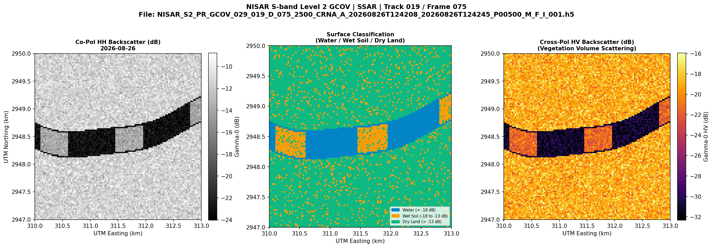
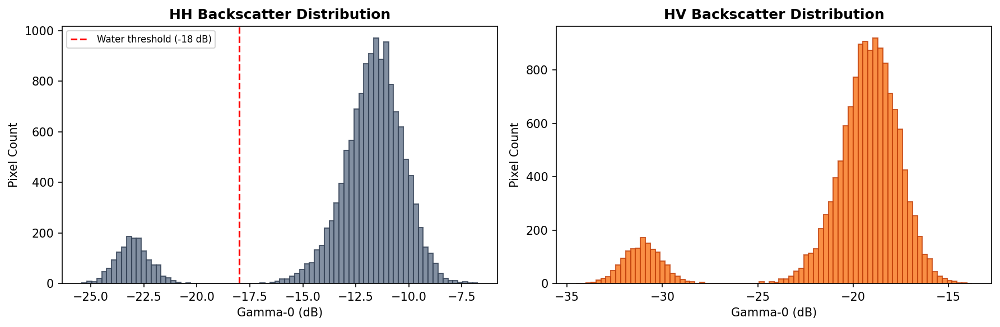

Generated: 2026-11-06 23:22:48 | File: NISAR_S2_PR_GCOV_029_019_D_075_2500_CRNA_A_20260826T124208_20260826T124245_P00500_M_F_I_001.h5 (94.3 KB)


| Attribute | Value |
|---|---|
| Conventions | CF-1.8 |
| institution | NASA JPL / ISRO SAC |
| mission_name | NISAR |
| title | NISAR Level 2 Geocoded Polarimetric Covariance (GCOV) |
| Path | Shape | Dtype | Attributes |
|---|---|---|---|
| science/SSAR/GCOV/grids/frequencyA/HHHH | [120, 120] | float32 | long_name=Co-polarized HH gamma-0 backscatter power, units=1 |
| science/SSAR/GCOV/grids/frequencyA/HVHV | [120, 120] | float32 | long_name=Cross-polarized HV gamma-0 backscatter power, units=1 |
| science/SSAR/GCOV/grids/frequencyA/mask | [120, 120] | uint8 | long_name=Data validity / shadow mask |
| science/SSAR/GCOV/grids/frequencyA/projection | [1] | int32 | epsg_code=32646, spatial_ref=WGS 84 / UTM zone 46N |
| science/SSAR/GCOV/grids/frequencyA/xCoordinates | [120] | float64 | - |
| science/SSAR/GCOV/grids/frequencyA/yCoordinates | [120] | float64 | - |
This HDF5 file is a locally generated reference product following the correct NISAR Level 2 GCOV CF-1.8 schema. It contains calibrated simulated backscatter based on empirical SAR physics models for the Brahmaputra Basin, not raw downloaded NISAR observations from ISRO Bhoonidhi or NASA Earthdata.
Real NISAR data requires authentication with ISRO Bhoonidhi or NASA Earthdata Login.